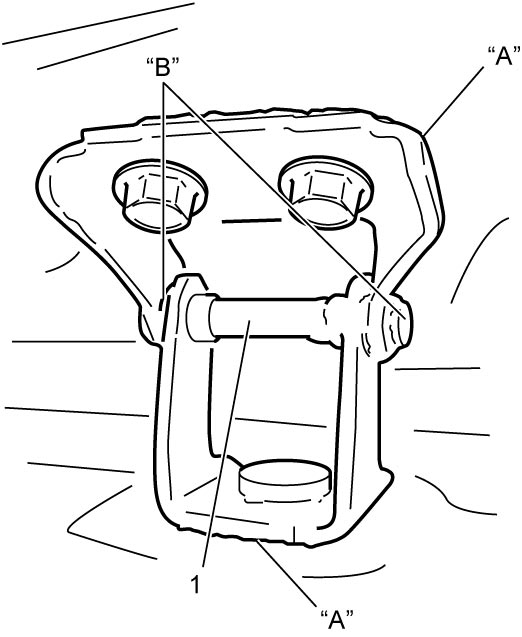

9J
| Rear End Door Assembly Removal and Installation |
The rear end door is heavy and the door falls rapidly from the open position when the door balancers are detached, and can cause personal injury.
Be very careful when opening and closing the rear end door after the door balancers are detached from the door.
Removal
1)Disconnect rear end door harness connectors (1) and washer hose (5).
2)Remove rear end door balancers (2) from vehicle.
3)Remove rear end door hinge nuts (4), and then remove rear end door assembly (3) with rear end door hinges.
4)Remove rear end door hinges, rear end door balancers and/or rear end door opening weather-strip if necessary. 
5)Remove rear wiper motor assembly if necessary.

 "Expand image")
Improperly handling or disposing of the rear end door balancers can result in personal injury.
•Do not disassemble a balancer. The gas inside the balancer’s cylinder can cause personal injury.
•Before discarding any rear end door balancer, a hole must be drilled in the cylinder part using a 2 to 3 mm (0.08 to 0.12 in.) drill (2) to release the inside gas.
Wear goggles when drilling the hole because metal chips produced by the drilling will be propelled by the gas discharged through the hole and may injure your eyes.
•Before discarding any rear end door balancer, a hole must be drilled in the cylinder part using a 2 to 3 mm (0.08 to 0.12 in.) drill (2) to release the inside gas.
Wear goggles when drilling the hole because metal chips produced by the drilling will be propelled by the gas discharged through the hole and may injure your eyes.
 "Expand image")
NOTICE:
Failure to take proper precautions when handling the removed rear end door balancers (dampers) can cause damage to balancers or can cause them not to work properly after reinstallation.
•Do not scratch the exposed surface of the piston rod. Also, do not allow paint or oil to touch the surface of the piston rod.
•Do not turn the piston rod with the balancer fully extended.
•Do not turn the piston rod with the balancer fully extended.
Installation
Reverse removal procedure noting the following points.
•Install rear end door balancers (2) directing arrow (6) on each balancer to body side.
•Tighten bolts and nuts to specified torque.
•Adjust door latch striker position.
•Adjust door cushion to prevent door from contacting the body when closed.
•Apply sealant “A” to contact face of door hinge (1) and apply grease “B” to rotating part of door hinge (1).
•Tighten bolts and nuts to specified torque.
•Adjust door latch striker position.
•Adjust door cushion to prevent door from contacting the body when closed.
•Apply sealant “A” to contact face of door hinge (1) and apply grease “B” to rotating part of door hinge (1).

 "Expand image")